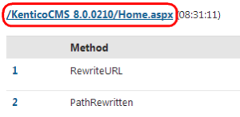
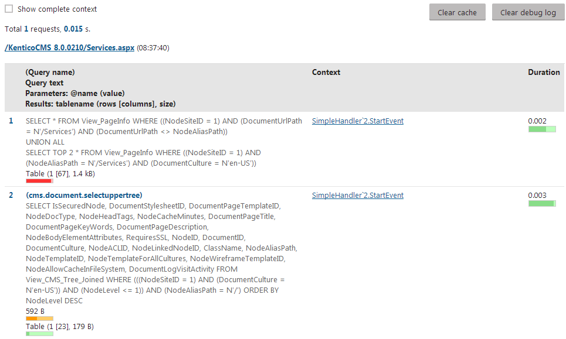
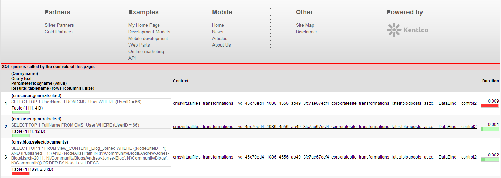

Debugging
Debugging allows you to monitor internal activity within the system. You can use the debugging tools to:
Find and fix problems with performance or specific features
Get detailed information when reporting issues to Kentico support
The following types of debugging are available:
Global system debugs
Hash tables - provides information about the hash tables used by system objects
Worker threads - allows you to track and manage background tasks
Cache items - shows which data is cached in the application's memory
Email debugging - allows you to monitor and test the sending of emails from Kentico
Debugs for individual web requests
Request details - provides an analysis of recently processed requests
SQL queries - shows which SQL queries the system executes when loading pages
IO operations - allows you to monitor file operations that occur in the system (both input and output)
Page ViewState - allows you to inspect the view state values saved by controls
Page output code - shows the output code of recently requested pages
Event handlers - displays the system events that were triggered while processing requests
Macros - allows you to analyze how the system resolves macro expressions
Cache access - shows the cache operations that the system performs during requests
Security - shows the details and results of security operations (permission checks)
Web farm synchronization - monitors the synchronization activity of web farm servers
Web analytics - shows the web analytic statistics logged for requests
Enabling debugging
Most debugs are disabled by default, because debugging requires the system to perform extra operations and reduces website performance.
Note: Always disable debugs before deploying websites to the production environment.
To configure debugging, adjust the settings in Settings -> System -> Debug.
The settings in the General category affect debugging globally:
|
Setting |
Description |
|
Disable debugging |
Globally disables all debugging tools, regardless of individual debug settings. |
|
Debug Import/Export |
If disabled, the system does not log debug information for the pages of the Import/Export interface. For performance reasons, it is recommended to leave this option disabled unless you need to debug the Import/Export process. |
|
Debug resources |
If disabled, the debug ignores all resource requests (GetResource and GetCSS). |
|
Debug scheduler |
If disabled, the debug ignores all operations executed by the scheduler. |
Configure individual debug types through the corresponding setting categories. The All category provides equivalent settings that enable all debugs:
|
Setting |
Description |
|
Debug everything everywhere |
Enables:
|
|
Enable all debugs |
Enables all debugs and the corresponding tabs in the interface of the Debug application. |
|
Display all debugs on live site |
If checked (true), all enabled debugs display their information on the live site below the regular content of pages. |
|
Include UI pages in all debugs |
If checked (true), all enabled debugs include actions performed on the pages of the user interface. |
|
Default log length |
Sets the default maximum length of the debug log in the Debug application. The default log length is used by debug types that do not have their own log length set. |
|
Display stack information in every debug |
If enabled, the system tracks the code stack for all debug types and displays the information in the Context column of the debug interface in the Debug application. |
|
Log everything to file |
Enables logging of all possible operations into .log files stored in the ~/App_Data/ folder (including the Event log and Email sending log). |
Global system debugs
Global debugs provide general information about the status of the application. To access the debug interface, open the Debug application.
System object hash tables
On the System objects tab of the debugging interface, you can view the number of objects stored in the system's hash tables. The debug shows two types of information:
The number of records in individual hash tables
The current number of hashed objects for individual object types
Click Clear hash tables to delete the content of all hash tables.
Worker threads
The system uses worker threads to perform tasks in the background, so that the main application can remain responsive to users. Examples of separate threads in Kentico are Smart search indexing and sending of marketing emails or mass emails.
You can manage threads on the Worker threads tab of the debug interface. Debugging of worker threads can be useful if your application is consuming significantly more resources than expected. Background threads may be the cause.
The debug shows two types of threads:
Running threads - all worker threads currently running in the system. You can Cancel (
 ) individual running threads, or View (
) individual running threads, or View ( ) their progress log.
) their progress log.Finished threads - the latest threads that have finished their activity.
Debugs for individual web requests
The system provides debugs for analyzing web requests that occurred during recent activity on websites, or in the administration interface of Kentico. The recommended way to use web request debugs is to view pages or perform actions in one browser tab (or a different browser), and then check the results in the appropriate debug log.
Like with global debugs, you can access the web request debugging interface through the Debug application.
Tip: To view the data of all enabled debugs for a specific request, click the request URL in any debug log.

Click a request URL in any debug log to view all debugging information for the given request
Request processing details
The debug on the Requests tab allows you to detect performance bottlenecks, and view detailed information about all processed web requests. You can analyze pages with slow response times, determine whether the cause is inside the application itself, and find the exact source of the problem.
The following information is available for each request:
A breakdown of individual steps in the request processing life cycle, showing the duration and result of each step
Cookies sent by the client with the request, and cookies returned in the response (if available)
Details about the request (HTTP method, User-Agent etc.)
Note: Loading a single page often generates multiple web requests. The additional requests retrieve uncached files and resources required by the content of the page.
Click Clear debug log to remove all data in the request debug.
SQL queries
To check which database queries the system executes when loading pages, open the SQL queries tab of the debugging interface. The debug log displays a list of recent web requests, along with the queries called within the context of every request. You can find the following information for each query:
The name and SQL code of the query.
The Context in which the query was called.
Click on the method to see the full stack trace.
If you enable the Show complete context option at the top of the interface, the stack trace is displayed for all queries.
The Duration of the query execution.
The total size of the data retrieved by the query.
Click Clear debug log to remove all data in the SQL debug.
Tip: The system does not execute SQL queries if the required data is already cached in the application's memory. If you wish to force pages to execute queries while you are debugging, click Clear cache to flush the application's cache.

Debugging SQL queries
IO operations
The File system (IO) tab of the debugging interface allows you to monitor file operations that occur in the system (both input and output). The IO debug displays a list of recent web requests, and all file operations carried out while processing individual requests. For each operation, you can see:
The type of the operation.
The size of the transferred data (if any).
How many times the system accessed the file.
The path of the affected file.
The Context in which the file operation occurred.
Click on the method to see the full stack trace.
If you enable Show complete context at the top of the interface, the stack trace is displayed for all operations.
The Provider selector above the debug log allows you to filter the operations for individual file system providers (such as the Local file system, Azure blob storage or Amazon S3). See Configuring file system providers for more information.
Click Clear debug log to remove all data in the IO debug.
Page ViewState
The debug on the Page ViewState tab displays a list of recent page requests, along with the view state values saved by the controls on the given pages. The log provides the following information for each control:
Control ID
Is dirty - indicates if the item was added to the view state after the TrackViewState method was called (typically occurs during OnInit).
You can display only controls with such items by checking Show only controls with dirty values above the log.
ViewState - the value of the control's ViewState field.
Total size - the size of the control's ViewState data.
To remove all previously logged view state data, click Clear debug log.
Note: The system retrieves the view state of controls using reflection. The ViewState debug may not work correctly when running in an environment that does not support reflection.
Page output code
You can view the exact output code of recently requested pages on the Page output tab of the debugging interface. Output debugging is particularly useful for AJAX requests, where you cannot view the output code of the response directly in the page source.
Click Clear debug log to delete the current output debug data (for all requests).
Event handlers
On the Event handlers tab of the debugging interface, you can find a list of all events that the system triggered while processing recent requests.
For more information, see:
Click Clear debug log to delete the current data in the event debug (for all requests).
Debugging on the live site
You can enable live site debugging in Settings -> System -> Debug through the "debug on live site" settings. The result is that pages on the live site display a debug log below the regular content. The log only includes information related to the requests used to load the given page.

Debug log below content of a page on the live site